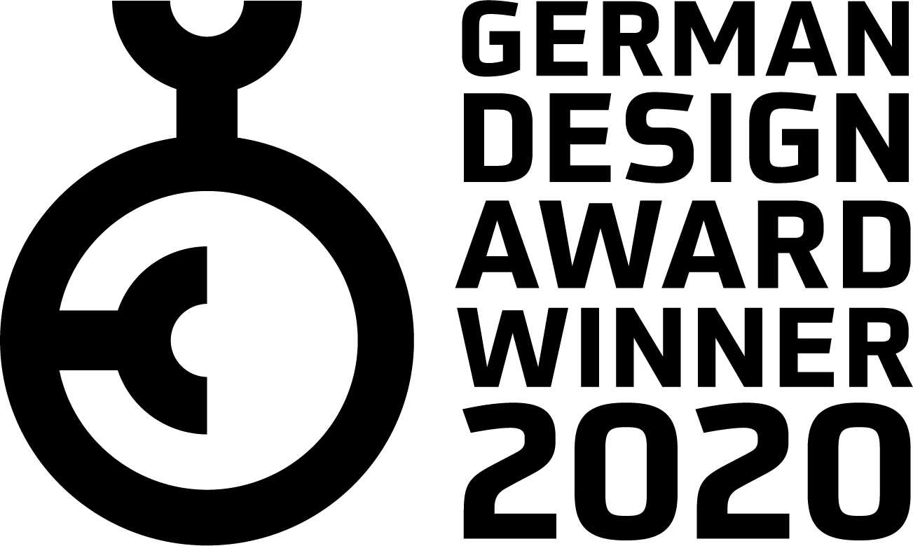
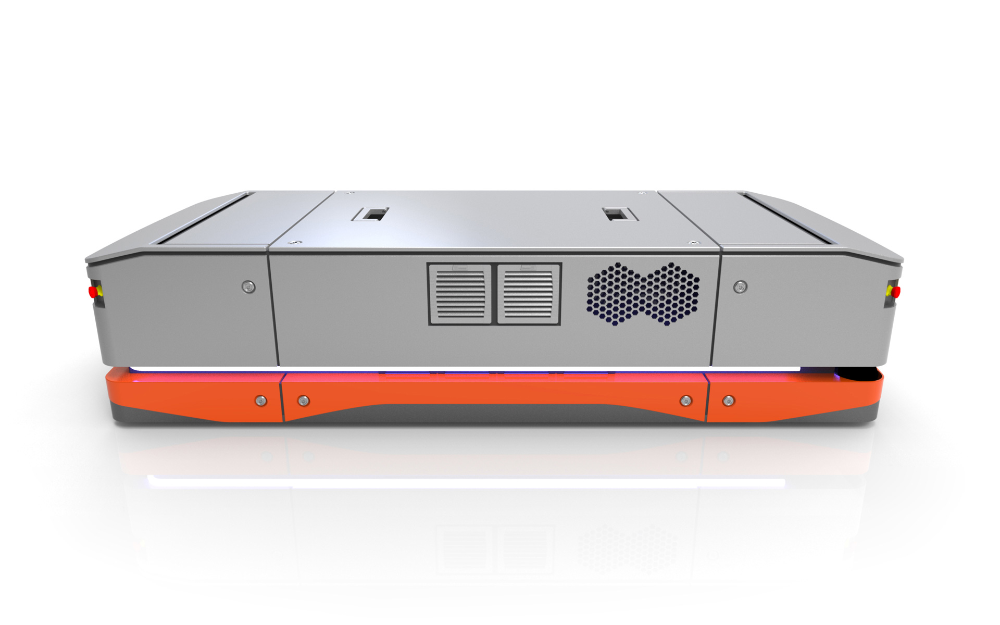
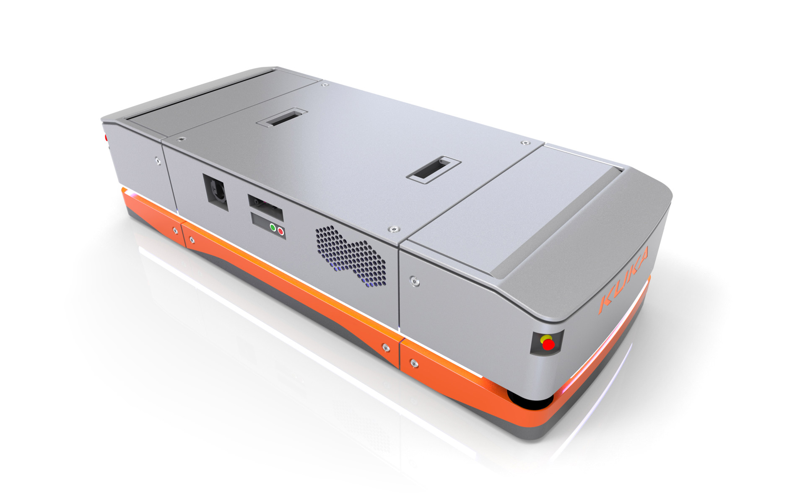
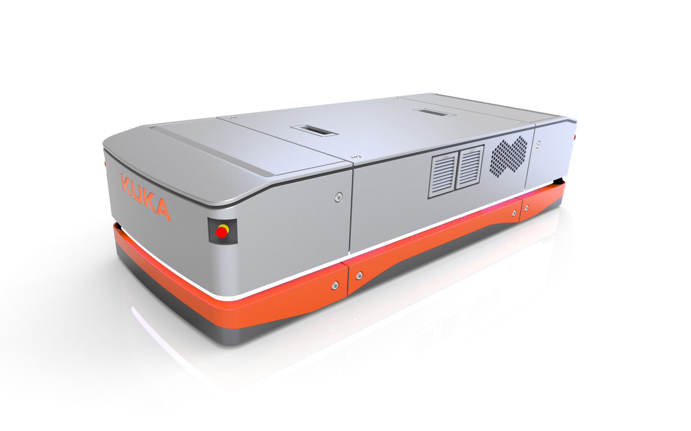

KUKA KMP 1500
Mobile Platform
KUKA KMP 1500
Mobile Plattform
The KMP 1500 is the answer to the industry's increasing demand for shorter response times and greater flexibility in their manufacturing concepts
In the factory of the future, predefined routes and rigid processes are a thing of the past. The
autonomously controlled vehicle is a platform that supplies robots and machines perfectly timed with
material and makes production more flexible to a hitherto unimaginable extent. It independently and
autonomously handles the transport of the products through all process steps and is perfectly suited for
mobile manufacturing concepts of Industry 4.0.
The omnidirectional drive technology moves the KMP 1500 in any direction from a standing position. This
ingenious wheel technology makes it possible to position itself accurately up to +/- 5 mm even in tight
spaces. This results in space-saving and highly precise automation solutions in logistics. With its
precise lifting mechanism, the KMP 1500 automatically retrieves the required components or returns
processed parts to the warehouse. Thanks to the navigation software, it can move freely through the room
without any conventional guidance or navigation elements. Infrared sensors and other safety systems
ensure safe operation so that people are recognized in good time.
The design of the KMP 1500 has been specially designed for cost-effectiveness and service-friendliness.
An integrated LED stripe signals the operating status and also serves as a direction indicator. For the
solid chassis with all its functional assemblies, a solid sheet welded construction was chosen. Its load
capacity is 1500 kg.
Selić Industriedesign service: Design concept, design consultation, design sketches, CAD design support,
CAD freeform modeling, design refinement, processing of design data for the engineering department
Die KMP 1500 ist die Antwort auf den steigenden Bedarf der Industrie nach kürzeren Reaktionszeiten und höherer Flexibilität in ihren Fertigungskonzepten
Vordefinierte Wege und starre Prozesse gehören der Vergangenheit an. Das autonom gesteuerte Fahrzeug ist
eine Plattform, die Roboter und Maschinen perfekt getimed mit Material versorgt und die Produktion in
einem bisher unvorstellbaren Ausmaß flexibilisiert. Sie übernimmt selbstständig und autonom den Transport
der Produkte durch alle Prozessschritte und ist perfekt für mobile Fertigungskonzepte von Industrie 4.0
geeignet.
Die omnidirektionale Antriebstechnik bewegt die KMP 1500 aus dem Stand in alle Richtungen. Diese Rad
Technologie erlaubt es, sich auch in engen Räumen bis zu +/- 5 mm genau zu positionieren. Daraus ergeben
sich platzsparende und höchst präzise Automatisierungslösungen in der Logistik. Die KMP 1500 holt mit
ihrem exakten Hebemechanismus die benötigten Bauteile selbständig oder liefert bearbeitete Stücke wieder
im Lager ab. Dank der Navigationssoftware kann sie sich frei und ohne klassische Spurführungs- oder
Navigationselemente durch den Raum bewegen. Infrarotsensoren und weitere Sicherheitssysteme sorgen für
einen sicheren Betrieb, so dass Personen in der Nähe rechtzeitig erkannt werden.
Das Design der KMP 1500 wurde speziell auf Wirtschaftlichkeit und Servicefreundlichkeit abgestimmt. Ein
integriertes LED-Band signalisiert den Betriebszustand und dient zugleich als Fahrtrichtungsanzeige. Für
das solide Chassis mit all ihren Funktionsbaugruppen wurde eine solide Blech-Schweißkonstruktion
gewählt. Seine Traglast liegt bei 1500 kg.
Selić Industriedesign Dienstleistung: Designkonzept, Designberatung, Designentwürfe, CAD-Design
Unterstützung, CAD-Freiform-Modellierung und Detailgestaltung, Aufbereitung von Designdaten für die
Konstruktion



Images © Selić Industriedesign